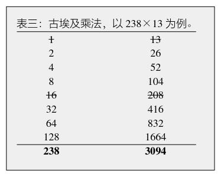
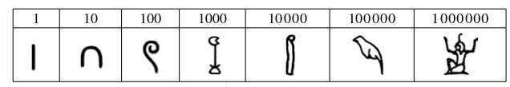

古埃及拥有相当水准的天文学知识，他们根据观测太阳和天狼星的运行制定历法，是科普特历法的先行者。他们把一年定为三百六十五天，每年十二个月，一个月三十天，剩下的五天作为新年期间的节日。这种使用太阳历的做法是世界首创，其历法和我们今天所使用的阳历很接近。不过他们把一年分为三个季节，每季四个月。由于一年的真正时间大约是365.25天，古埃及的日历每四年就比实际少一天。他们还没有闰年的概念，但通过对天狼星的观察，已经意识到这一点。积累一千四百六十年后，日历时间比实际时间少整整一年，于是观察的天象和日历又变得一致了。古埃及人把一千四百六十年叫作天狗周期（天狗就是天狼星）。他们还发明了日晷等计时器，把一天分为二十四小时，按照日出日落来分，白天和黑夜各十二小时。由于昼夜的长短是随着季节变化的，因此一小时的长度也随着变化，而且白天和夜晚的每小时时长也经常不一样。
古埃及人已经了解许多星座，比如天鹅座、牧夫座、仙后座、猎户座、天蝎座、白羊座以及昴星团等。他们还把黄道恒星和星座分为三十六组，在历法中加入旬星，一旬为十天，这和中国农历里面旬的概念非常类似。古埃及文化有显著的星神崇拜，有专门的祭司负责天文学观测和记录。每年夏天，天狼星在黎明前升起的时候，尼罗河就开始泛滥。所以古埃及人认为天狼星是掌管圣河尼罗河的神祇。他们建造了神殿来祭祀天狼星。还有人认为建造金字塔也是为了观测天狼星。古埃及人重视农业，赋予太阳浓重的宗教色彩，代表太阳的神祇有好几种，比如拉和阿顿。很多法老都标榜自己是他们的代表，有资格统治埃及。

尼罗河泛滥，淹没农田，但同时也使被淹没的土地成为肥沃的耕地。尼罗河还为古埃及人提供交通的便利，使人们比较容易来往于河畔的各个城市之间。古埃及文明的产生和发展同尼罗河密不可分，所以古希腊历史学家希罗多德（Herodotus，公元前484—公元前425）说：“埃及是尼罗河的赠礼。”
古埃及有一套跟古巴比伦不同的数学系统。比如，他们有一套独特的乘法计算方法。假设要计算238×13。古埃及人的做法是先把较大的数（238）分解为1和一系列2的不同整数幂（2n）（2、4、8、16，等等）的和，然后把每一个2n对13做乘法。这很容易做到，因为2n×13=2×2n-1×13，所以每一个2n×13的结果都是前一个结果的两倍。表三是这个方法的详细步骤。
表三的第一列数字是分解238。把所有可能的数字都列出来，使它们的和等于238，有些数字是不需要的，用横杠划掉。第二列是第一列的数乘以13后的结果，所有第一列中划掉的数字，乘以13以后的结果也划掉。最后把所有没被划掉的数字都加起来，就是计算的结果。类似的算法至今仍然在有些地方流传。 [此书分享微信wsyy5437]
古埃及人很早就开始对土地进行测量了。他们是最先懂得用手掌和前臂来量度距离的人群之一。起初他们只是用手指来计算数目，后来渐渐创造了数字符号。仔细看看这些数字符号是很有意思的（图3）。数字1当然很平常，就像一根树枝。很多古代文明都用同样的符号。数字10的形状是人的踵骨（脚跟处的骨头），100是绳子挽成的一个圈，1000是一支莲花，10 000是指尖弯曲的手指，100 000是一只鸟（或者是青蛙），1 000 000是双手张开的象征无穷和无限的神祇赫（Heh）。显然，古埃及人采用的是10进位制，但是还没有0和从2到9的数字符号，所以数字的表达比较复杂。比如数字278需要把两个绳子圈，七根踵骨和八条树枝放在一起来表达。

图3：古埃及人的数字符号
我们对古埃及的数学的了解，主要来自古代纸草记录。其中有两种记录最为有名，一是“兰德纸草书”，大约作于公元前1700年（它还有可能是已经失传的更早时期纸草记录的复本）；二是“莫斯科纸草书”，它比“兰德纸草书”好像还要早一个世纪。从内容来看，它们似乎都是数学教科书，类似于中国古代的算经。
由于农田不断地变更，古埃及人需要经常丈量土地。希罗多德告诉我们，拉美西斯二世法老（Rameses II，约公元前1303—约公元前1213）把土地划成长方形分给埃及人，然后按照面积征收地税。如果尼罗河水侵占了土地的一部分，土地拥有者可以向法老申请减少地税。于是土地丈量员就要来重新计算土地面积，开出土地流失证明。希罗多德说：“在我看来，这是几何学的来源。这门学问后来传到了希腊。”
著名希腊哲学家亚里士多德（Aristotle，公元前384—公元前322）也认为是古埃及人最早开创了几何学。不过他认为这门科学的来源不是土地勘测之类的实际问题，而是由于古埃及神庙里的祭司有很多闲工夫，吃饱了撑的没事干，就研究几何。古埃及人对于神庙建筑的方向非常关心，这大概跟观测天狼星的需要有密切关系。他们能够用绳子和标杆准确地定出墙角基石的位置，这在很多建筑的图画中都能看到。他们好像已经懂得了勾股定理，并用它来界定建筑物的直角。
在上面提到的两套纸草书里，几何问题占有很大的比重。这些问题基本都跟测量有关，很多问题涉及几何图形的面积计算，包括圆形、三角形、矩形和不规则四边形。学者们对很多三角形和多边形的计算方法存在分歧，不过基本都认为多数计算方法只是为了得到近似值，没有完整的理论。
体积计算的问题在这些文献里也很重要。比如“兰德纸草书”的第41题：圆柱形的谷仓，直径为d，高为h，谷仓的体积V是多少？纸草书给出的答案是：
V=[(1-1/9)xd]2h
根据我们熟悉的圆柱体积公式V＝π(d/2)2h，我们可以导出古埃及人使用的近似圆周率，它和真正的圆周率之间的误差不到1%。
还有一类重要的问题是计算金字塔的比例。金字塔的底面是正方形；正方形的边长与金字塔的高度之比决定了金字塔的形状。确定这个比例需要一定的三角学知识，他们用“赛克德”（Seked或Seqed）来表示直角三角形的余切。“兰德纸草书”中的第56到60题就跟计算“赛克德”有关。有了“赛克德”，就知道了金字塔的坡度。比如，著名的吉萨大金字塔（也被称作胡夫金字塔）是在公元前2560年建成的。它的四个斜面同水平面的角度（即坡度）是50度50分40秒。吉萨的塔尖高出地面146.5米，它在公元1300年之前的三千八百多年里一直是世界上最高的建筑。这座金字塔建造得极为精准：它的底面四边形四条边长的误差平均值只有58毫米；地基离水平基准的误差在±15毫米以内。金字塔正方形的地基和正北方向（不是地磁北极）基本平行，误差小于4分（1分是1度的六十分之一），正方形地基同塔尖的偏心误差仅为12秒（1秒是1分的六十分之一）。有人还发现，金字塔底面周长和高的比例是6.285 714……这跟2π的数值差小于0.05%。有些古埃及学家认为这是在设计中刻意达到的结果。不过也有人认为古埃及人并没有圆周率的概念，不会将它用在建筑物的设计上。他们认为观测到的金字塔斜率也许只是根据塔高和底面边长之比而做出的选择而已，并没有特意考虑建筑物的总尺寸和比例。
确实，并不是所有的金字塔都具有相同的斜率。比如另一座著名的弯曲金字塔，是埃及第四王朝的法老斯尼夫鲁（Sneferu，意思是“创造美好”，在位时间为约公元前2613—公元前2589）建造的。它有一个奇特的造型，是因为在它修建了将近一半的时候，由于某种原因，金字塔内部出现大范围的结构破坏，使原先的计划不可能完成。斯尼夫鲁选择把已经完成的塔底向四边扩展大约十五米，然后继续向上收窄直到完成塔顶。弯曲金字塔底层部分的斜率是55度27分，而上层部分则变成43度22分，使整座建筑呈现出弯曲的外表。弯曲金字塔在人类建筑史和埃及金字塔研究中都有非常重要的意义；在此之前的金字塔都是阶梯式的。比弯曲金字塔更早的是美杜姆金字塔。它是埃及人第一次尝试建造平滑金字塔的成果，但很可能在弯曲金字塔建造期间就坍塌了。考古研究表明，美杜姆金字塔在建造时就已经显出不稳定的迹象，因为它内部的房间有不少由大木梁支撑着。自美杜姆金字塔以后，斯尼夫鲁改用巨石垒出拥有平滑斜面的真正金字塔。弯曲金字塔是斯尼夫鲁在位期间建造的第二座金字塔，在它之后终于出现了人类历史上第一座完美的金字塔—红色金字塔。
红色金字塔是斯尼夫鲁的陵墓，所在地距弯曲金字塔北面大约一公里。它的斜率是43度，跟弯曲金字塔的上半部分相同，因此非常稳固。这个设计是将美杜姆金字塔和弯曲金字塔改进以后的结果。红色金字塔高104米，底面边长220米。而它的建造仅仅花了十年时间（也有人认为是十七年）。胡夫金字塔是最大的金字塔，高146.5米，底面边长230.4米，估计使用的建筑材料达590万吨。建造胡夫金字塔用了二十年，也就是说，为了建造它，古埃及人平均每天要运送和安装80吨的建筑材料。这样浩大的工程在四五千年前难道不是奇迹吗？
在另一部古代纸草记录“柏林纸草书”里，还有一类问题，对于当时的人们来说，它们非常复杂。比如这个问题，用现在的代数语言描述是这样的：
x2+y2=100
x/y=1/(3/4)
这类问题，我们今天是把第二个等式，也就是y=3/4x，直接代入第一个方程，求得x2之后再开平方。古埃及人却不这样做。他们先假定x=1，这样，x2+y2=25/16 。25/16比100小64=82倍，所以真正的x是1的8倍。
古埃及人似乎对理论不感兴趣。他们满足于实际测量，便把精力放在建造宏伟的建筑上面。
大约在公元前7世纪的某一天，一位腓尼基人来到埃及，跟随祭司们学习几何数学和哲学。这位腓尼基人出生在古希腊人的殖民地爱奥尼亚地区的城邦米利都，也就是今天的土耳其城市米雷特。这个人名叫泰勒斯（Thales，约公元前624—约公元前547）。古希腊最后一位哲学家普罗克洛斯（Proclus，公元412—公元485）对他有较为详细的介绍，说泰勒斯在埃及看到了几何学的重要性，就把这门学问带到了希腊。他是人类历史上第一位提倡理性主义精神和普遍性原则的人，被称为“哲学史上第一人”。泰勒斯是一个多神论者，认为世间充满了神灵，万物都有生命。传说毕达哥拉斯（Pythagoras，约公元前570—公元前495）早年也拜访过泰勒斯，并听从了他的劝告，前往埃及做研究。